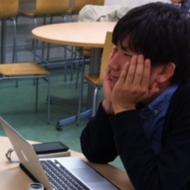

脱出ゲーム - 留年危機一髪！ とは？
あなたは怠惰な学生で、留年の危機に瀕しています。
今期受講中の、パズル学入門を落とすと進級できません。
テスト期間になって、ようやくそのことに気づいたあなたは、
これまで一度も出席していませんでしたが、
期末テストを受けてワンチャン単位をもらおうとやってきました。
周りを見渡すと、なぜか同じように留年しそうな雰囲気の人たちばかりがいて、
まともな学生はいないようです。
全員が揃ったところで、パズル学入門担当の教授がやってきて、
テスト問題を配りはじめました。
そこに書かれていた問題とは...
あなたは無事テストを解き、留年を回避することができるのか！？
あなたの挑戦をお待ちしております。
場所：文新6講
時間：1回45分
メンバー
脱出ゲーム - 留年危機一髪！は、以下のメンバーによって企画されました。チケットの受け渡しには下記メンバーのいずれかが向かいます。

斎藤 陽介
情報学研究科M2

竹村 光
情報学研究科M2
百南 綾華
生命科学研究科M2
喜多 香織
情報学研究科M2
橋本 美沙
情報学研究科M2
松岡 彩加
生命科学研究科M2
予約
予約は以下のフォームからお願いします。
※チケットの受け渡しは京大の吉田キャンパス内で行いますので、事前予約は吉田キャンパスまでチケットを受け取りに来ることができる人がいる場合のみお願いします。
お問い合わせ
不明な点がある場合は、お気軽に escape.at.kyoto (at) gmail.com までご連絡ください。